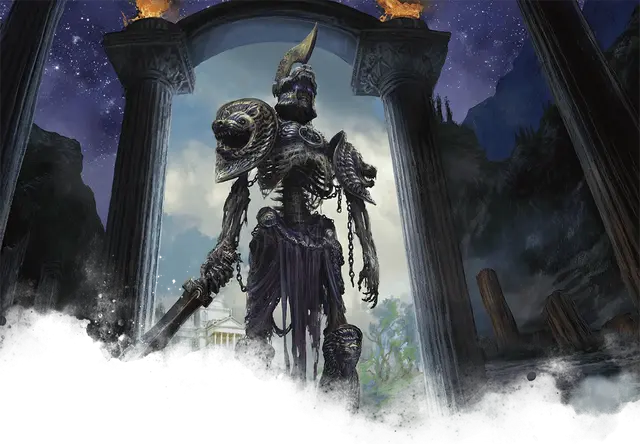

Филаския
Phylaskia
Большая Нежить, законно-нейтральная

Класс Доспеха 18 (латы)
Хиты 104 (11к10 + 44)
Скорость 40 футов
| мод | спас | ||
|---|---|---|---|
| СИЛ | 20 | +5 | +5 |
| ЛОВ | 15 | +2 | +2 |
| ТЕЛ | 18 | +4 | +8 |
| мод | спас | ||
|---|---|---|---|
| ИНТ | 10 | +0 | +0 |
| МДР | 16 | +3 | +7 |
| ХАР | 14 | +2 | +2 |
Навыки Восприятие +7, Проницательность +7
Иммунитет к урону некротическая энергия, яд
Иммунитет к состояниям глухота, испуг, истощение, ослепление, отравление, очарование
Чувства истинное зрение 120 футов, пассивное Восприятие 17
Языки Все
Опасность 9 (5000 опыта)
Бонус мастерства +4
Особенности
Аура привратника. Любое существо, которое начинает свой ход в пределах 10 футов от филаския, должно совершить спасбросок Мудрости Сл 15. При успехе существо становится невосприимчивым к этой ауре на следующие 24 часов. При провале существо получает помеху на спасброски, и его скорость уменьшается вдвое до начала следующего хода.
Стойкость нежити. Если урон опускает хиты филаския до 0, он совершает спасбросок Телосложения Сл 5 + полученный урон, если только это не был урон излучением или урон от критического попадания. При успехе хиты филаския опускаются до 1.
Бдительный. Филаския не может быть застан врасплох.
Действия
Мультиатака. Филаския совершает две атаки Длинным мечом и один раз использует Истощение сил.
Длинный меч. . Рукопашная атака оружием: +9 к попаданию, досягаемость 10 футов, одна цель. Попадание: 14 (2к8 + 5) рубящего урона или 16 (2к10 + 5) рубящего урона, если используется двумя руками, плюс 11 (2к10) урона некротической энергией.
Истощение сил. Рукопашная атака оружием: +9 к попаданию, досягаемость 5 футов, одно существо. Попадание: 12 (2к6 + 5) урона некротической энергией. Если цель не обладает иммунитетом к урону некротической энергией, её показатель Силы уменьшается на 1к4. Цель умирает, если это уменьшает ее Силу до 0. В противном случае уменьшение длится до тех пор, пока цель не завершит короткий или продолжительный отдых.
Описание
Эти закованные в броню духи-скелеты охраняют границы Подземного царства и его различных подопечных. Бессонные и безжалостные, они внимательно изучают всех, кто проходит мимо, и убивают тех, кто бросает им вызов.
Природа нежити. Филаския не нуждается в воздухе, еде, питье или сне.